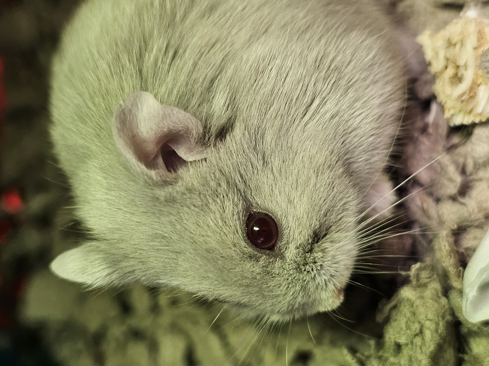
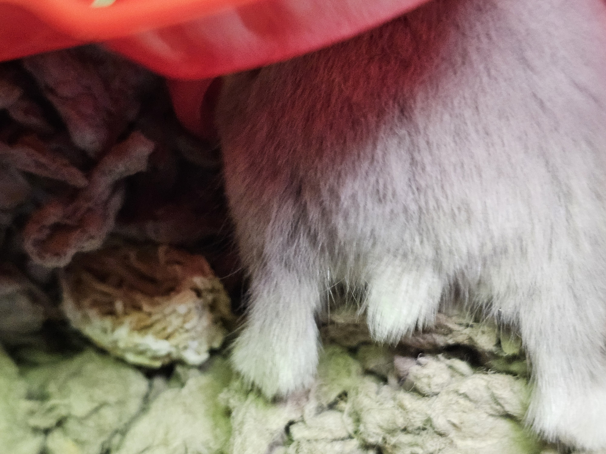

Beware the Ides of March . . . where riding high after a wonderful Writers Conference may have you making impulsive decisions...
Say hello to Hamilton, the newest member of our family, lol.
 I have really been missing my mice (the mice I took care of in my previous job in the vivarium). If you follow me on Facebook, you know my feed is full of mice and rats (and corgis, of course). Lately, I've also been getting a lot of hamster related videos and memes.
After the last night of the Writers Conference, when I was in soaring spirits from the literary immersion, hubby had to run to the pet shop to get some plants for the aquariums. And, the pet shop was having a sale on hamsters.
He is just the cutest little thing, and so very chill. He doesn't seem bothered by handling, corgis, or the noise of my office, which is where I put his cage (so he has lots of social "interaction" and household activity.)
We've only had him a short time, so we will see how it goes, but it seems like this chill little hamster is going to fit into our family just perfectly.

As you can see, I've updated the website using some of the new skills I've learned in my class. I think it's really improved it beyond my old basic design. This is bringing me closer to ditching Wordpress altogether and having a stand-alone HTML site again. Woot!
The sidebar is still a learning area. Eventually, it will have social media widgets, a link for rss feed, and all that good stuff. For now, I haven't learned any of that, so it's just mostly empty real estate.
It's kind of cool to be doing this more robustly. Back in the day, when I first learned html (before CSS was even a thing, really), we used to trick out our websites like a computer-nerd version of "pimp my ride." Back then, I created our homeschooling website from scratch, and it had active/shifting backgrounds, auto-play music for every page, blinkies, cursor effects . . . everyone's sites look like they had been designed by Liberace. Long before MySpace, there was the glory known as Geo-Cities, lol.
Now, of course, we know better than to go so overboard. I don't even bother adding music anymore because it is SO annoying to visit a site and suddenly have music playing (or, more common today, a damn video that autoplays). But that doesn't mean a Cthulhu cursor might not be in the future for this site. Small embellishments, you know? Nothing over-the-top . . . nothing TOO over-the-top, anyway, lol.
Of course, that's a bit down the road. Right now, my link buttons in the sidebar are fugly because I need to add widgets but don't know how to make the javascript work . . . yet. So until I do, I've got these terrible looking buttons and such over there as placeholders. Don't worry, I'm hoping to be able to move past them in a month or two.
My writing update this time starts with the UND Writers Conference. It was amazing, as always. This was Dr. Crystal Albert's last year running the conference, and she really ended with a great one!
Aside from great panels and readings, the workshops this year were incredible. In the first workshop, with Ava Chin, her focus was on the question, “Why I write.” She had essays from George Orwell and Joan Didion where they ponder that very question. It really got me thinking.
I've really been struggling with writer's block (THREE YEARS!!!), and my self-dialogue/thought process about it has been "I want to write. Why can't I write?!" The two may be tied together, but not in the way I've been coming at it. Maybe the question shouldn't be, "Why can't I write," but "Why do I want to write?"
Then, Ava Chin upped the ante and said we should ask the same question of our younger selves. When we were younger, why did we write? Why was it something so important to us back then? The premise in Orwell's essay was that if we stray to far from those original reasons, we get in our own way and likely create problems. We 'lose' ourselves. Our writer selves.
Well . . . son-of-a-bitch.
The best answer I could come up with for Why I Write (or why I continue to flog myself over not writing and am trying so damn desperately to get back to it) was:
Because I always have.
That's not much of a reason!
As for my younger self, I wanted to share stories. I loved reading and I wanted to share the stories in my imagination. I wanted to make people happy, sad, scared; I wanted to make them think. I wanted to give readers the adventures and emotions that I got out of stories. And writing was just plain old fun! I was always a pantser, so I would start with an idea and just see where it went. And that was fun! "Being a writer" was something I wanted for so long. I was so thrilled when I was able to start doing it regularly, and even more thrilled when I was actually published. Even before I was published, it was a big part of how I identified myself: I am a writer.
The first story I ever *remember* writing was in 6th grade. I took first place at the young author's conference. I think the story had something to do with rabbits (I had read Watership Down two years earlier.)
Okay. So I started out wanting to share stories, and "writer" has always been a big part of my identity. But why am I still trying to write NOW?
Am I trying to be something I just no longer am? Just because "writer" WAS a big part of my identity, it doesn't mean that is who I am now. Have I just lost my way? Or I have I cracked out of a shell that, like it or not, I've outgrown?
Day one, event number 2 of the UND Writer's Conference, and I'm having a damn existential crisis. <Sticks head in brown paper bag and hyperventilates.>
On top of it, when I go back through my old blogs and see areas where I'm having problems writing (either writer's block or just a general apathy) one of the things I always mention is that, "I need to make it fun again. I've been taking publishing/getting paid/making deadlines/or whatever far too seriously, and it's taken the fun out. I'm going to write poetry/limericks/not write to submission calls/etc. to try and get back to the fun and joy of it."
So now I've got to spend some time considering my why, and what I can really do to make it more fun again. Do I think it's an identity I've outgrown? Could be, but I don't think so. I think that the I've lost my way (my WHY). I think all my old blogs were right, and I've let the fun be sucked out of writing, and that's one of the biggest reasons I started writing in the first place.
I've been blaming my block mostly on some shit that went down in 2021, but that was only the tip of a very large iceberg that had been undergoing accretion for a very long time.
If I want to write again, then I need to find my "Why" and also make it fun again. How to do that? Pffff. Hell if I know.
However, I did end up having a really, REALLY great time in the poetry workshop and actually wrote three drafts of poems that might have merit! In only an hour!
Terrance Hayes is not just a great poet, he's a great teacher, and he is super enthusiastic! He loves, loves, LOVES sharing poetry with people. Not just in reading it, but in writing it and helping THEM write it. Anytime someone is that enthusiastic, it's almost always contagious!
I started reading Albert Camus's The Plague as prep for the UND Writers Conference, but I'm still working on it. AND, I still have two or three other books I'm working on, lol. My "TBR" (to-be-read) list just keeps growing longer, and I'm not making much progress against it!
The only thing longer than my TBR list is my TBW list: To be watched. I'm thinking about doing some revisiting, though.
I happened to catch a few bits and pieces of Annihilation recently. The first time I watched it, I had been chomping at the bit for it to finally make it to a streaming service (or rental) where I could watch it, but it seemed like it was at least two years (if not longer) before it was released to streaming/rentals.
Maybe my anticipation for it was part of the problem, but when I watched it, it was a total letdown. It was pretty, but it kind of sucked. Especially that bear nonsense.
Let's be honest: cocaine bear (or the zombie bear in Z Nation) was scarier.
But during my recent catching of bits and pieces of the movie, it hit different. I don't know why, but I was able to enjoy it more.
The same thing happened a few days ago with Prometheus. Ye, Gods! How I have hated that movie. But I caught a bit here and there, and it actually seemed to have more merit and be more interesting than my first viewing.
So either:
My expectations interfered with my first viewing of these movies, or
These movies are better in small snippets and scenes rather than taken as a whole, or
My tastes are getting duller?
It will be interesting to see which might be the case.
I KNOW I will still have problems with Prometheus and and Covenant, just because there are plot problems. What bunch of scientists are going to hop off on an alien planet and go, "Hey! The air is fine for supporting human respiration. Let's take off our masks without a single considertion to viruses, bacteria, fungi, etc." Or that whole ridiculous scene where the two guys encounter the swimming snake-like alien, and the guy decides to try and touch it? I don't care how high you are, you're still going to react to a snake-like thing as if it were a snake, especially something that's new and never seen before. So yeah. Parts of the plots are just eye-rolling ridiculous, but I'm still going to try and give them another watch.
Of course, my plans for watching are always WAY bigger than what I actually accomplish, though (see my "plan" to rewatch Defiance from, oh, I don't know, at least a year or two ago, lol). So we will see how this goes and see if I actually rewatch any of these!
I did Watch Aquaman 2. Okay, technically, I was on the couch cuddling with hubby and he decided to watch Aquaman 2, so I was just along for the ride.
I'm not really a fan of superhero movies, but I am a big fan of Momoa, and not just because he's very easy on the eyes. In a lot of his movies, he just comes off as a big doof (even when he's a superhero). His characters always seem to have this thrill/joy of life that make them such a pleasure to watch. I'm sure that's the way they are written, but I also (from what I've seen in interviews etc.) think it might be part of his genuine personality filtering into the characters, and that's why it really translates well. It could all be an act, but if that's the case, then his acting cred goes up 10x for puling it off. He really does seem like a guy that would be a blast to hang out and have a few beers with.
I just finished another exam for web development class, and it was *almost* as much of a clusterf**k as the first one (groan).
In anticipation of potential wi-fi issues, I purchased a mini docking station (the exam venue advises that you have a hardline to your internet connection rather than wi-fi, but NONE of my laptops have an ethernet port).
I hooked up my laptop, set myself up on the futon in my office. The venue warns that you should be in a pristine, distraction free location, but my office is far from un-cluttered. Since it's full of books and papers, etc., I set up on the futon so that there are no concerns from the proctors about books/papers/notes being within arms reach.
Everything went smoothly until the proctor made their usual request of, "Show me the room." I picked up my laptop and begin to pan around the room, and then a window popped up on my computer stating that my connection is unstable. If you've ever used ethernet cords, you know how wonky they can be if they, or your computer, move a little.
Panning my laptop caused the ethernet cord to wiggle and I lost my connection with the proctor.
I'm already stressed because it's an exam AND because I had such problems with the prior exam (bad password from the instructor, etc.), so now I'm freaking out. To make matters worse, it's now 20 minutes past my original log-in time for the exam. And the exam warns that if you log in more than fifteen minutes past your scheduled time, it will not accept it and you will have to reschedule. So will it count this log on as a new one, and make me reschedule, or will it capture that my new log on is just because of technical difficulties???
At this point, I'm wondering why I keep putting myself through this shit. I don't NEED to take these classes. I'm doing this for fun, and things like this are DEFINITELY NOT FUN and just superfluous stress!
So I get logged on, and the program starts to connect me to a new procotor. But then my previous proctor closes that connection and restarts the process with me. Whew! But then he sounds all pissy with me, like it's MY fault the connection got lost. Whatever, dude. At this point, let's just get this ##@!$#@!$#@! exam over with.
So I take the exam. It's meh. There seem to be a lot of questions that weren't in our materials and even a question or two where NONE of the answers are the right one (did the prof mis-type some of these?)
So, once again, I'm stressed and just glad to be done with the damn thing. I go to the proctor window and . . . it's a totally different proctor now. Did my proctor have to take a pee break and have someone else take over? Okay, whatever. Let's roll with it. I type in the chat window, "Okay, I've submitted my exam. Anything else to do?"
Proctor: "Your institution requires complete erasure of the whiteboard. Erase it completely and then hold it up to the camera for so I can see."
Um. What? I type, "What whiteboard?"
Proctor: "The writing materials."
Me: "My institution doesn't allow any writing materials." I'm thinking, what the f are you talking about? I had to do the whole 'pan the room' thing at the start of the exam to show that there were no writing materials, books, papers, cellphone, people, etc. anywhere near me! Moreso, I'm thinking, "Bitch, did you see me writing on anything? NO. So what are you talking about with this whiteboard business???"
She responds, "Alright. Have a good night!" and we disconnect. However, that doesn't resolve my stress, because now I'm thinking, what if the professor gets a transcript of this shit? He might end up thinking I was pulling one over on the proctor with a whiteboard when there was no whiteboard involved!!!
Sigh. These classes are supposed to be for my own fun and enjoyment, and they really haven't been since I left the English department. They've actually been getting progressively worse. Maybe it's just because I haven't taken any communication department classes for a while, and all my classes have been in the college of business. Maybe the college of business is just not for me, not even as a minor.
Anyway, I got a B on the exam, which normally would not even be remotely acceptable, but given all the stress and issues I've had with the exams/ProctorU Live, it's actually freaking fabulous. That I haven't completely failed these high stress situations is pretty amazing.
The class itself? Still love it. I've learned SO much. It really has been valuable. But the whole Proctor U thing (required by the college of business) has been a thorn in my side.
Aside from my UND Web Development class, I am also working on learning Spanish through one of my online learning platforms (and these classes ARE, in fact, VERY FUN!).
Quiero dos cervezas, por favor. Un para mí, y un para ella.
Para mí, la comida es perfecta aquí.
Eso es delicioso, pero no es muy bueno para mí.
As you can tell, I'm in the early stages, but I'm learning to hold my own ordering in a restaurant!
I remember that my first lessons in French (way back in high school) were the same way. We started with learning the words for food, drink, and ordering in restaurants, then moved on to very important phrases like, "Ou est la salle de bain?" Hopefully, I'll learn it in Spanish soon, too, and soon be able to ask where the bathroom is in THREE languages, lol.
My biggest issue with learning Spanish is that the years of French I took are interfering with it a bit. When you say an 'r' sound in French, it's usually a "back of the throat, choking on a chip" sound. In Spanish, those are supposed to be rolled. So where "terrible" in French is sort of te-chk-ree-blay, it is tearrrrrree-blay, lol.
I think I'd like to get pretty good at Spanish, and then I will take a refresher on French. I used to be able to read, write, and hold conversations in French very well, but now I'm rusty.
While I'm doing this mostly for fun, being fairly fluent in those three languages (English, French, Spanish) mean I can hold conversations with a huge number of people, which is pretty awesome. If I wanted to REALLY be able to interact with a large number of people, I could learn Mandarin. In almost all language lists, it is listed in the top 3 most-spoken languages. However, Mandarin is very difficult, and I'm not sure how well I would do with the tonal differences so important to communicating in Mandarin. So I'm going to stick with the easier languages for now.
This month's playlist. The ten songs I'm listening to on repeat.
This month's "pondering or rant" is a little bit of a rant.
If you remember, I had sent an email to an advisor to inquire about possibly changing my major. I hadn't heard anything back after a month and was planning on sending another email just in case my original one got lost in the shuffle or in a pile of email if the advisor had been sick or on vacation.
Since it also almost time to register for classes, I decided to pop into our class management app and take a look at potential classes for next semester before I sent the new email. For reasons I'm not quite sure of, I also popped into our app's “What-if” section.
The software has a function that allows you to create “What-if” scenarios before you change your major. It basically compares your transcript with the degree requirements and lets you know which classes you are missing and which classes you have already taken. It's a great tool. However, it has two problems:
- It doesn't always catch “close-enough” classes or number changes. For example, I took Fundamentals of Public Speaking a million years ago when it was Comm 161. Now, the course has the same name but is Comm 110. It doesn't always catch these and mark the requirement as completed.
- It must not work after you've complete a degree. I haven't been able to make it do a “what-if” since I earned my English degree.
So, for whatever reason, I popped into the What-if section of the app, and what do you know? There was a "requested what-if report" in there with a date of about a week after I contacted the advisor!
Cool beans! The advisor must have created the report for me and just forgot to send me an email about it (trust me, it happens. I've done it myself more than once!).
But . . . upon further investigation, I'm unsure about the accuracy of the report.
One of the sections it says I'm missing is in Essential Studies, those base classes every student has to take before their major courses. Okay, I get that. I'm sure it's a thing of the course catalog has changed, and so they've changed the ES requirements. My current major has me "grandfathered-in" to the old ES requirements. If I change my major, I will have to comply with the new ES requirements. I get that.
The amusing part? The ES I would be missing is in the category of . . . drum roll . . . communication! Communication just happens to be my current major, lol.
However, aside from just being amusing, you can see from this list of courses that would fulfill this ES requirement why I mentioned how changing class numbers over time can create a problem. This area of ES requires 3 credits.
Communication ESNow you see why I mentioned Comm 161 in the intro. I've already taken the the three-credit fundamentals of public speaking course that should fulfill this requirement, just under another number. In addition, I've also taken CSCI 289, Social Implications of Computer Technology. However, when I took the class, it was a two credit course. Now it is a three credit course. The What-If report picked up the class, but it has it listed as it's original two-credit course . . . leaving me ONE credit short on this ES area, lol.
Normally, the advisors "clean-up" these kinds of issues and correct the report. So, I will have to send another email to the advisor asking for clarification on these.
But it looks like no matter what, I would end up having to take Calculus I, II, and linear algebra (ick). And Electrical Engineering Introduction to Digital Electronics with lab. And a statistical math course (gross), and another laboratory science (meteorology fulfills that, which I'm okay with).
I could just declare a Computer Science minor. I have fulfilled the requirements for that already with classes I took in the past (except for the ES issue, of course; I might still have to resolve some of that).
So I'm not any closer on figuring out which way I'm going to go. I don't know if I want to deal with the experience requirement of my current communication major, but I don't know if I can handle all the math for the computer science major. It's a conundrum.
My plan for registering for classes is that I am not taking a summer class. I'm going to concentrate on (fingers crossed) writing, painting, and fun classes on Udemy. In the fall, I'm going to take a class outside of my major (Communication; college of Arts and Sciences) and outside of my minor (Management Information Systems; college of business). I'm going to take a programming class in the computer science department (College of Engineering and Mines) and see how I feel about it.
Side note: many years ago, practically in the days of DOS, I was a computer science major. And I don't remember it being part of the college of engineering and mines. I'm guessing that's something that happened as part of the restructuring and shuffling that goes on in departments in academia.
That's it for this month. Until next month, Stay Spooky!
~~Here be monsters . . . and corgis.~~